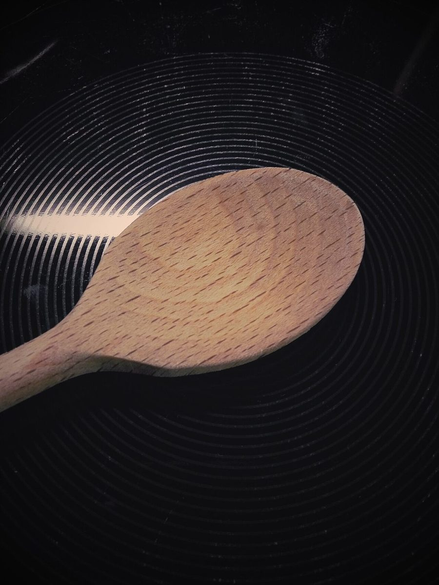
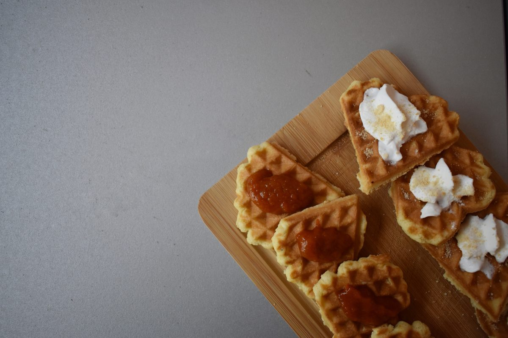

店のこと
店のこと
お店について確認できているのは、所在地・電話番号・Instagramのアカウントだけです。
このページの「想像してみる」部分は、制作側が連想して書いたものです。お店の実際の様子・考え・メニューとは関係がありません。
確認できていること
- 店名は「Cafe T」、業種はカフェ
- 所在地は愛知県豊田市小坂本町7丁目63-1(〒471-0034)
- 電話番号は0565-31-7776
- 営業時間・定休日・メニュー・価格・ご予約・駐車場は準備中

想像してみる
「T」のつく三つの言葉
由来は分かりません。制作側は、店名の頭文字から次の三つの言葉を連想して、ページの見た目を決めました(お店の姿ではありません)。
- Tinyちいさい。写真を十二分の一の大きさで並べる
- Tick目盛りの印。縮尺をあらわす細い線に使う
- Tone色調。紙のような淡い灰色と、濃紺・コバルト・レモン色の三色づかい
